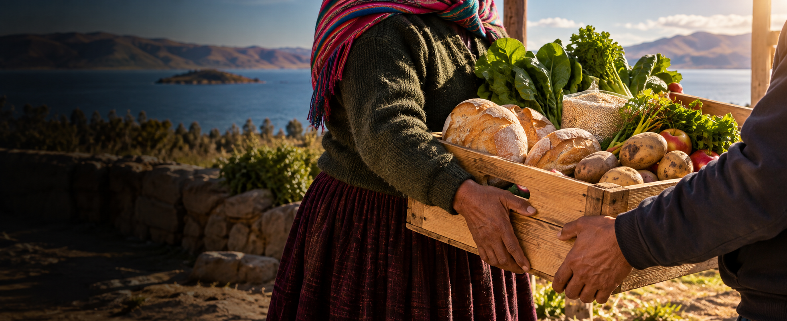

Comparte lo disponible.
Publica el alimento, su cantidad, conservación declarada y ventana de recojo.
REAlimenta conecta establecimientos donantes con organizaciones beneficiarias para aprovechar mejor los alimentos disponibles.
Descubre cómo funcionaMenos desperdicio.
Más conexiones que importan.

Puno, PerúUn excedente. Muchas posibilidades.
Conteos de la base de datos del MVP.
Incluyen las cuentas y publicaciones de demostración.
Un proceso claro para compartir alimentos, encontrar una organización y coordinar con información.
Publica el alimento, su cantidad, conservación declarada y ventana de recojo.
Las organizaciones consultan la oferta y envían una propuesta de recojo.
Consulta la ruta por carretera, su duración estimada y el margen de tiempo.
El donante selecciona una solicitud. Cada decisión conserva un registro.
La distancia es solo una parte. REAlimenta compara la duración estimada por carretera con el límite de aprovechamiento declarado y tus tiempos de coordinación.
Selecciona y ajusta tu punto en un mapa interactivo.
Viabilidad logística, margen reducido o información insuficiente.
Conservamos una idea sencilla: cuando la información conecta, las oportunidades se multiplican.
Publica, revisa solicitudes y elige con quién coordinar el recojo.
Quiero compartirEncuentra donaciones y evalúa las condiciones del traslado antes de solicitar.
Quiero ser parteLas publicaciones, solicitudes y decisiones conservan auditoría para dar seguimiento a los cambios.
Conocer el MVPLas condiciones del alimento son declaradas por el donante. La evaluación de una ruta es logística y temporal: no certifica inocuidad, no mide temperatura ni reemplaza el criterio profesional.
Los criterios técnicos de conservación, envases y transporte deben validarse con especialistas de Nutrición e Ingeniería Agroindustrial.
Gestión de donaciones, solicitudes, seguimiento y custodia con recepción e incidencias registradas. Notificaciones y verificación documental continúan pendientes.
Taller de Desarrollo de Software